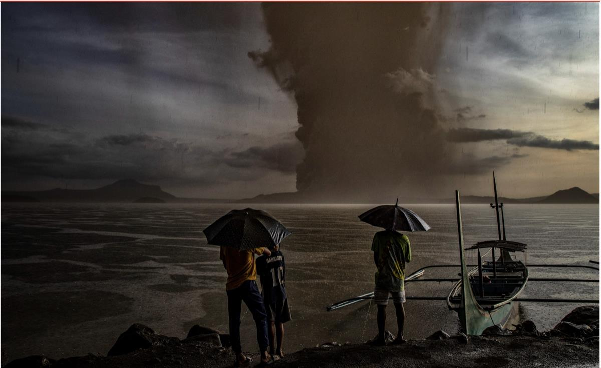
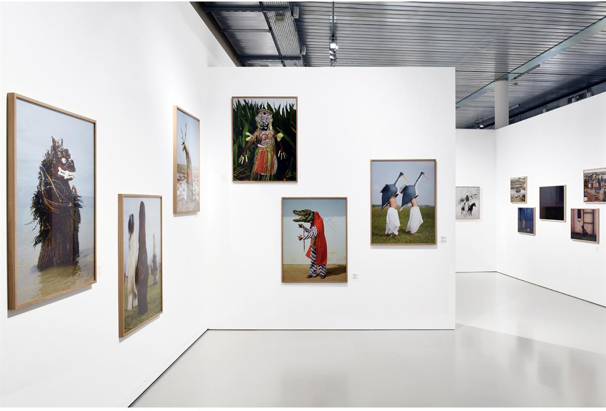
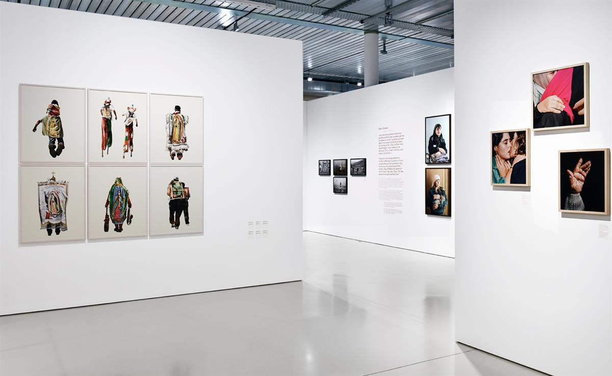
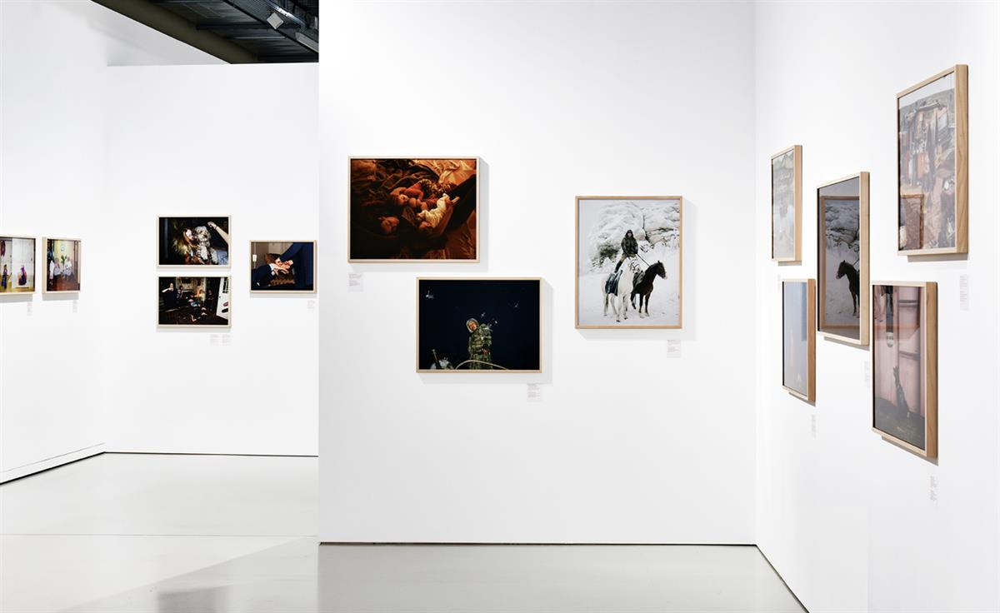
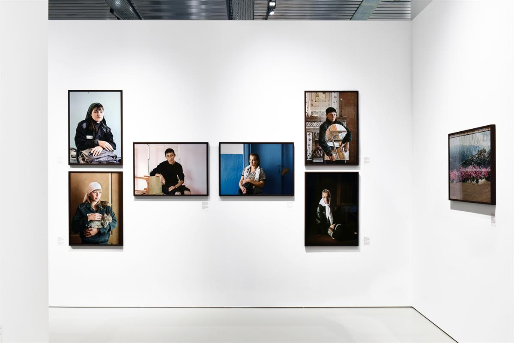

SOURCE: INTERNATIONAL RED CROSS AND RED CRESCENT MUSEUM
HUMAN.KIND.
A NEW LOOK AT HUMANITARIAN PHOTOGRAPHY THROUGH 10 EDITIONS OF THE PRIX PICTET
Human.Kind. presents an alternative approach to photographing humanitarian action. The exhibition showcases the work of 30 of the 3,000 photographers from around the world who’ve been nominated for the Prix Pictet since it was first awarded in 2008. Their images depict key aspects of humanitarian action differently from anything we see in the news. What sets them apart? An unerring sense of compassion.
Curators: William A. Ewing, Elisa Rusca. Head of project: Pascal Hufschmid
DATE
19.10.2023 to 14.04.2024
LOCATION
International Red Cross and Red Crescent Museum
Avenue de la paix 17
1202 Geneva
OPENING HOURS
Open Tuesday to Sunday from 10 a.m. to 6 p.m. from April to October, and from 10 a.m. to 5 p.m. from November to March.
Closed on Mondays, December 24, 25 and 31 and January 1
SOURCE: INTERNATIONAL RED CROSS AND RED CRESCENT MUSEUM




